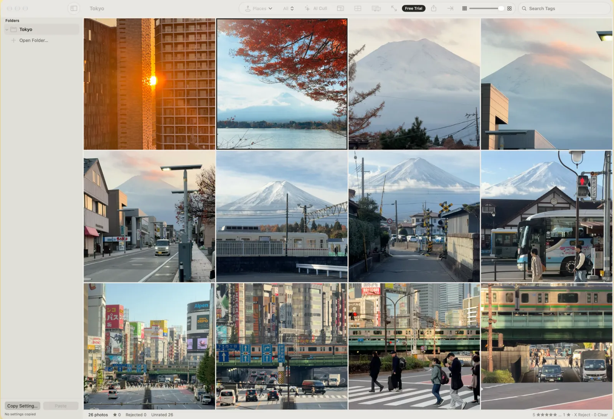

No import. Just your folders.
Open a folder on an SD card or external SSD and your photos are there. No catalog, no database — edits live in XMP files next to your photos, and originals stay untouched.
Open a folder and start right away — view, cull and develop with no import. Your photos never leave your computer or Windows PC, and all AI runs on-device.
Free to download, with a 30-day free trial of every feature. Requires macOS 26 or later.
If Windows shows “Windows protected your PC”, click “More info” → “Run anyway”.

RAW tuned for your camera — Profiles matched to more than 130 cameras. Exposure, tone curve, color grading — and fast enough to move through thousands of shots.
Open a folder on an SD card or external SSD and your photos are there. No catalog, no database — edits live in XMP files next to your photos, and originals stay untouched.

Smooth skin and even out tone while keeping texture. Reshape face, jaw, eyes, nose and lips with sliders, and remove one person’s blemishes across many photos at once.

Select the subject, sky, background or people in one click and adjust each mask on its own. Add, subtract and intersect to refine.

Paint over what you want gone and it is filled in to match. All AI runs on-device — your photos never leave your Mac or Windows PC.

Butter Edit is a photo editor with no import and no catalog.
Not a subscription. Buy once, keep it.
Browsing, culling and editing are always free.
Click “Start 30-Day Free Trial” to use every feature for 30 days. You are never charged automatically.
After the trial only exporting is locked. One purchase unlocks it for good.
Buy outside the App Store and use it on Mac and Windows, on up to 3 computers.
Email us with any question or problem: thefilmtravel@gmail.com
Please include your computer (Mac model and macOS version, or Windows version), camera model and what happened.
The app is free to download. Click “Start 30-Day Free Trial” to use every feature for 30 days. After the trial, viewing, culling and editing keep working; exporting needs the one-time unlock purchase. You are never charged automatically.
On a Mac signed in with the same Apple Account, open Settings → Purchase and click “Restore Purchases”.
Your original photos are never changed. Edits are saved in .xmp files next to the photos.
On Mac, Butter Edit opens RAW files from cameras that macOS supports; on Windows, from cameras its built-in RAW decoder (LibRaw) supports. New cameras often work after a macOS or app update.
Control a camera connected by USB and bring new photos straight into your folder. Allow camera access the first time you connect.